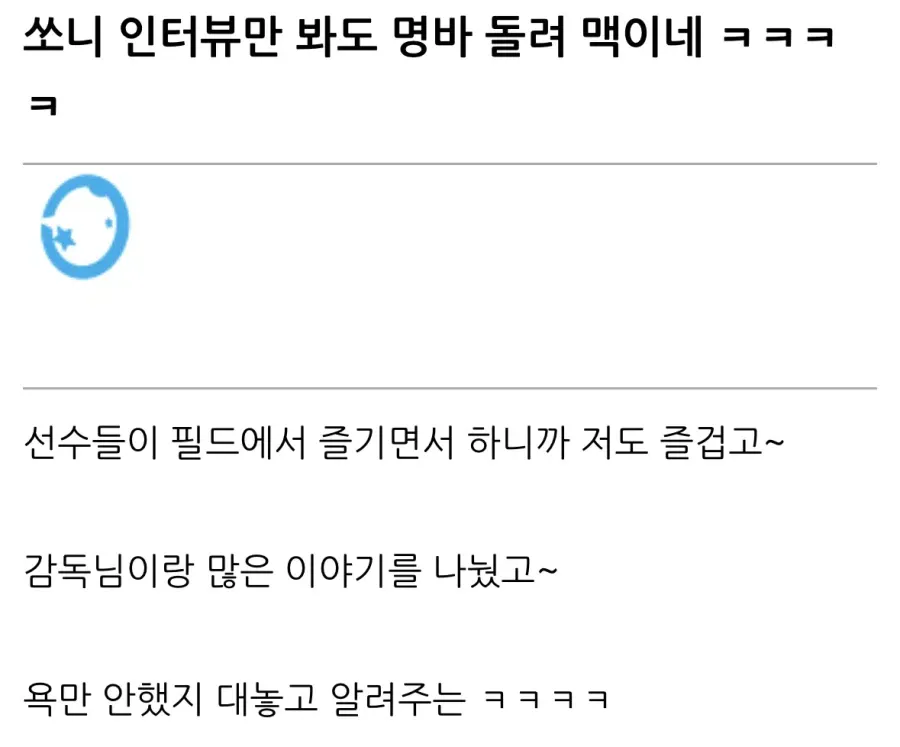

이러나 저러나 그때 팀분위기는 십창이었을테니
곱창먹고싶다
??? : '싸워'
타타카에!!!!!!!!!!
타타카에!!!!!!!!
나 그거 오늘 볼거야
진짜 이 문장보는데 기생충에서 그 과외따러가서 하는말 생각나더라 ㅋㅋ
사기치는애가 보여주기식으로 말하는거
ㅋㅋㅋㅋ
??? : 이게 팀이야?!
코레가치무나노?!
쏘니 이번 아시안컵이 국대 마지막무대일텐대
성적이 어떻든 선수들 모두 만족할만한 경기내용 나왔으면 좋겠다

대화만 해도 이리 잘하는데